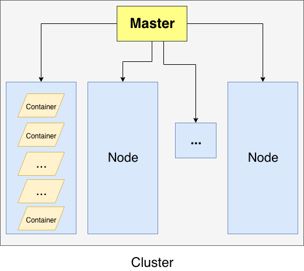
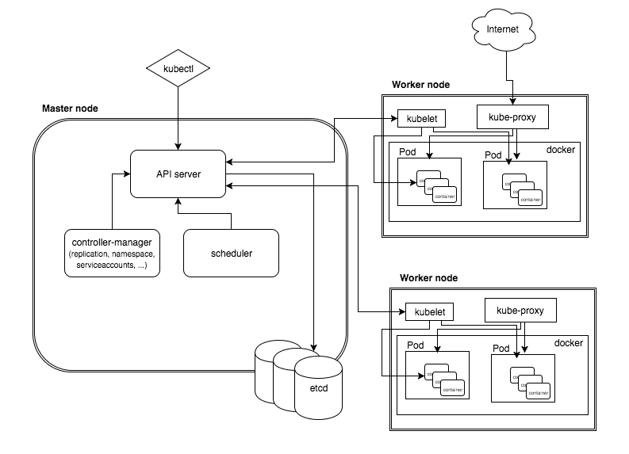
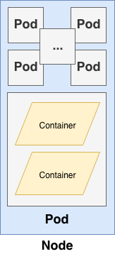
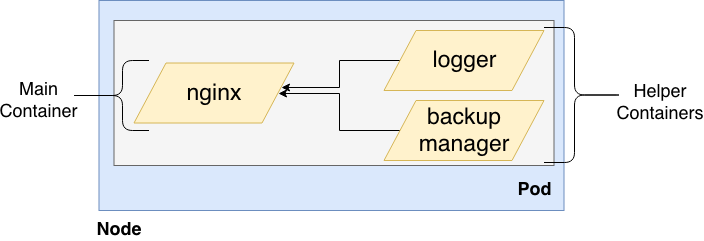

Kubernetes
Outline
- What is Kubernetes?
- Cluster
- Architecture
- Terminology: Node - Pod
- Terminology: Service - Label
- Terminology: Deployments
- Deployment Approaches
- Demo
- Other Object Types
What is Kubernetes?
- Tool for container and/or microservice orchestration
- Initially developed at Google
- Managed by CNCF
- Also known as k8s
- System for running many different containers over multiple different machines
Cluster

Kubernetes Cluster
Architecture

Kubernetes Architecture
Terminology: Node - Pod
Node

Pod

- Demo ( k8s-gitea/gitea-pod.yaml - k8s-simple/pods.yaml, kubeproxy)
Terminology: Service - Label
Service
"a service represents a logical set of pods and acts as a gateway, allowing (client) pods to send requests to the service without needing to keep track of which physical pods actually make up the service." - Source
- ClusterIP, NodePort, LoadBalancer, Ingress
Label
"Labels are the mechanism you use to organize Kubernetes objects." - Source
- Filter different type but related objects (group of objects)
- Demo ( k8s-gitea/gitea-service.yaml - k8s-simple/services.yaml, kubeproxy)
Terminology: Deployments
"Deployments represent a set of multiple, identical Pods with no unique identities. A Deployment runs multiple replicas of your application and automatically replaces any instances that fail or become unresponsive. In this way, Deployments help ensure that one or more instances of your application are available to serve user requests." - GKE
- Desired State
- Current State
Deployment Approaches
- Imperative Deployments: “Do exactly these steps to arrive at this container setup”
- Declarative Deployments: “Our container setup should look like this, make it happen”
- Demo ( k8s-gitea/gitea-deployment.yaml)
Demo Application Architecture

Other Object Types
- DaemonSets
- StatefulSet
- PersistentVolumes, PersistentVolumeClaims
- ReplicaSets
- ReplicaController
- NodeSelectors
- Scheduled & Parallel Jobs
- Service Discovery & DNS
- Secrets, and many others...